컴퓨터응용가공산업기사 (2014-09-20 기출문제)
1과목: 기계가공법 및 안전관리
1. 모듈 2, 잇수 27, 비틀림각 15°의 치직각방식의 헬리컬 기어를 제작하고자 한다. 기어의 바깥지름은 약 몇 mm로 가공해야 되는가?
- 50
- 55
- 60
- 65
(정답률: 44%)

2. 제품의 치수가 공차내에 있는지를 간단히 검사할 수 있는 게이지는?
- 틈새 게이지
- 한계 게이지
- 측장기
- 블록 게이지
(정답률: 75%)
3. 밀링에서 햐향절삭과 비교한 상향절삭 작업에 대한 설명 중 틀린 것은?
- 표면 거칠기가 좋다.
- 강성이 낮아도 무방하다.
- 절삭 공구를 위로 들어 올리는 힘이 작용한다.
- 백래시를 제거하지 않아도 된다.
(정답률: 79%)
4. 탭(Tap)작업에서 탭의 파손원인이 아닌 것은?
- 소재보다 탭의 경도가 클 때
- 너무 무리하게 힘을 가했을 때
- 구멍이 너무 작거나 구부러졌을 때
- 막힌 구멍의 밑바닥에 탭의 선단이 닿았을 때
(정답률: 92%)
5. 브라운 샤프형 분할판의 구멍수가 아닌 것은?
- 15
- 19
- 23
- 30
(정답률: 59%)
6. 일반적인 블록게이지 조합의 종류가 아닌 것은?
- 12개조
- 32개조
- 76개조
- 103개조
(정답률: 51%)
7. 두께가 얇은 가공물 여러 개를 한번에 너트로 고정하여 가공할 때, 사용하기에 편리한 맨드릴은?
- 팽창 맨드릴
- 갱 맨드릴
- 페이퍼 맨드릴
- 조립식 맨드릴
(정답률: 65%)
8. 일반 연삭은 연삭 깊이가 매우 적은데 비해 한번에 연삭깊이를 크게 하여 가공하는 연삭은?
- 성형 연삭
- 고속 연삭
- 그립피드 연삭
- 자기 연삭
(정답률: 78%)
9. 호닝가공의 특징이 아닌 것은?
- 발열이 크고 경제적인 정밀가공이 가능하다.
- 전(前) 가공에서 발생한 진직도, 진원도, 테이퍼 등에 발생한 오차를 수정할 수 있다.
- 표면 거칠기를 좋게 할 수 있다.
- 정밀한 치수로 가공할 수 있다.
(정답률: 69%)
10. 공구마멸 중에서 공구날의 윗면이 칩의 마찰로 오목하게 파여지는 현상을 무엇이라 하는가?
- 구성인선
- 크레이터 마모
- 프랭크 마모
- 칩 브레이커
(정답률: 82%)
11. 특수공구 재료인 다이아몬드의 일반적인 성질 중 가장 거리가 먼 것은?
- 강에 비해서 열팽창이 크다.
- 장시간 고속절삭이 가능하다.
- 금속에 대한 마찰계수 및 마모율이 적다.
- 알려져 있는 물질 중에서 가장 경도가 크다.
(정답률: 75%)
12. 마이크로미터의 측정면의 평면도를 검사하는데 이용되는 정밀한 기구는?
- 광선정반
- 공구 현미경
- 하이트 마이크로미터
- 투영기
(정답률: 62%)
13. 다이얼 게이지의 특징이 아닌 것은?
- 측정범위가 좁고 직접 제품의 치수를 읽을 수 있다.
- 소형, 경량으로 취급이 용이하다.
- 눈금과 지침에 의해서 읽기 때문에 오차가 적다.
- 연속된 변위량의 측정이 가능하다.
(정답률: 67%)
14. 센터리스 연삭기에 없는 부품은?
- 연삭숫돌
- 조정숫돌
- 양센터
- 일감지지판
(정답률: 78%)
15. 선반의 척(chuck)에 해당 되지 않는 것은?
- 헬리컬 척
- 콜릿 척
- 마그네틱 척
- 연동 척
(정답률: 68%)
16. 연삭숫돌의 결합제와 기호를 짝지은 것이 잘못된 것은?
- 고무-R
- 셀락-E
- 비닐-PVA
- 레지노이드-L
(정답률: 77%)
17. 나사의 유효지름 측정과 관계없는 것은?
- 삼침법
- 공구 현미경
- 나사 마이크로 미터
- 전기 마이크로 미터
(정답률: 69%)
18. 밀링커터의 종류 중 자유 곡면가공에 가장 적합한 것은?
- 각 밀링커터(Angle milling cutter)
- 정면 밀링커터(Face milling cutter)
- 볼 엔드밀(Ball ens mill)
- T홈 밀링커터(T-slot milling cutter)
(정답률: 91%)
19. 선반가공에서 길이가 지름의 20배가 넘는 환봉을 절삭할 때 진동을 방지하기 위해 사용하는 부속장치는?
- 맨드릴
- 돌리개
- 방진구
- 돌림판
(정답률: 87%)
20. 드릴의 회전수 600rpm, 이송 속도 0.1mm/rev, 드릴의 원추 높이 3mm, 구멍의 깊이가 17mm일 경우 구멍을 가공하는데 소요되는 시간은 약 몇 초인가?
- 50
- 40
- 30
- 20
(정답률: 35%)
2과목: 기계설계 및 기계재료
21. 주철을 신소재로 도약시킨 ADl 주철의 열처리 방법은?
- 마퀜칭
- 마템퍼링
- 오스포밍
- 오스템퍼링
(정답률: 65%)
22. 고속도강으로 금형을 장시간 사용할 때 일어나는 시효변화를 억제하는 방법은?
- 담글질 처리를 2회 이상 한다.
- 뜨임 처리를 3회 이상 반복한다.
- 풀림 처리를 2회 이상 반복한다.
- 마텐자이트를 오스테나이트화 한다.
(정답률: 60%)
23. 액체 침탄제로 사용되는 것은?
- KCN
- NH3
- CH4
- C3H8
(정답률: 53%)
24. 오스테나이트계 스테인리스강은?
- HP 40
- 18% Cr-8% Ni
- 18% Ni-8% Cr
- 22% Cr-0.12% C
(정답률: 73%)
25. Fe-Fe3C 상태도에는 몇 개의 고상이 있는가?
- 3개
- 4개
- 5개
- 6개
(정답률: 53%)
26. 기계구조용 탄소강의 기호는?
- SM20C
- SPS3
- STC3
- GC200
(정답률: 75%)
27. Al 합금에 첨가하는 원소 중 내식성을 해치치 않고, 강도를 개선하는 원소가 아닌 것은?
- Cr
- Si
- Mn
- Mg
(정답률: 46%)
28. 탄소공구강(STC3)의 금속조직학적 분류로 옳은 것은?
- 공석강
- 아공석강
- 과공석강
- 공정주철
(정답률: 40%)
29. 황동에 납(Pb)을 첨가하여 절삭성을 향상시킨 것은?
- 톰백
- 강력황동
- 쾌삭황동
- 문츠메탈
(정답률: 83%)
30. Si, Ge의 원소계열은?
- 비금속원소
- 금속원소
- 준금속원소
- 비철금속원소
(정답률: 55%)
31. 구름베어링에서 전동체의 원둘레에 고르게 배치하여 전동체가 몰리지 않고 일정한 간격을 유지할 수 있게 하여 전동체의 접촉에 의한 마찰을 방지하는 역할을 하는 것은?
- 리테이너
- 내륜
- 저널
- 실드 플레이트
(정답률: 69%)
32. 지름 7cm의 중실축과 비틀림 강도(强度)가 같고, 내ㆍ외경비가 0.8인 중곡축의 바깥지름은 약 몇 mm인가?
- 77.3
- 83.4
- 89.5
- 95.1
(정답률: 46%)
33. 주철제 V벨트 풀리의 홈 각도가 36°, 접촉부 마찰계수는 0.2라 할 때 유효마찰계수 μ‘는?
- 0.887
- 0.444
- 0188
- 0.401
(정답률: 28%)
34. 안지름 400mm, 내압 1N/mm2의 실린더 커버를 12개의 볼트로서 체결할 경우 체결 볼트의 골지름은 약 몇 mm이상이어야 하는가? (단, 볼트 재료의 허용인장응력은 48MPa이고, 인장력만 작용한다고 가정한다.)
- 26.87mm
- 24.45mm
- 20.18mm
- 16.67mm
(정답률: 27%)
35. 세로탄성계수 E(N/mm2)와 응력 σ(N/mm2), 세로변형률 ϵ과의 관계식으로 맞는 것은?
- E=σ/ε
- E=ε/σ
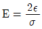
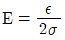
(정답률: 49%)
36. 260kNㆍmm의 토크를 받는 직경 60mm의 회전축에 사용하는 묻힘 키의 폭×높이×길이는 18mm×12mm×100mm이다. 이 때 키에 생기는 전단응력은?
- 6.1N/mm2
- 5.7N/mm2
- 4.8N/mm2
- 3.2N/mm2
(정답률: 52%)
37. 정(Chisl) 등의 공구를 사용하여 리벳머리의 주위와 강판의 가장자리를 두드리는 작업을 코킹(caulking)이라 하는데, 이러한 작업을 실시하는 목적으로 적절한 것은?
- 리벳팅 작업에 있어서 강판의 강도를 크게 하기 위하여
- 리벳팅 작업에 있어서 기밀을 유지하기 위하여
- 리벳팅 작업 중 파손된 부분을 수정하기 위하여
- 리벳이 들어갈 구멍을 뚫기 위하여
(정답률: 81%)
38. 인장 및 압축의 선형 스프링에서 스프링에 작용하는 힘을 P, 마찰계수를 μ, 비틀림각을 θ, 변위량을 δ라 할 때 스프링 상수 k를 구하는 식은?
- k=μPδ
- k=δ/P
- k=P/δ
- k=μθδ
(정답률: 41%)
39. 그림과 같은 블록 브레이크에서 드럼축이 우회전할 때의 F를 F1, 좌회전할 때의 F를 F2라고 할 때 F1/F2의 값은 얼마인가?
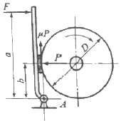
- 1
- 1.5
- 2
- 2.5
(정답률: 41%)
40. 작은 기어의 잇수가 50, 비틀림각이 20°인 헬리컬 기어의 상당평기어의 잇수는 약 몇 개인가?
- 40
- 50
- 60
- 70
(정답률: 44%)
3과목: 컴퓨터응용가공
41. 절점의 개수가 9이고 차수(degree)가 4인 임의의 b-spline 곡선의 조정점의 개수는 몇 개인가?
- 3
- 4
- 5
- 6
(정답률: 55%)
42. 베지어(Bezier) 곡선에 관한 설명 중 가장 거리가 먼 것은?
- 곡선은 양단의 정점을 통과한다.
- 1개의 정점 변화는 곡선 전체에 영향을 미친다.
- n개의 정점에 의해서 정의된 곡선은 (n+1)차 곡선이다.
- 곡선은 정점을 연결시킬 수 있는 다각형의 내측에 존재한다.
(정답률: 77%)
43. CAD/CAM소프트웨어의 주요 기능이 아닌 것은?
- 데이터의 변환
- 자료출력 기능
- 자료입력 기능
- 네트워크 기능
(정답률: 81%)
44. 점을 표현하기 위해 사용되는 좌표계 중에서 기준축과 벌어진 각도 값을 사용하지 않는 좌표계는?
- 직교 좌표계
- 극 좌표계
- 원통 좌표계
- 구면 좌표계
(정답률: 56%)
45. 특징 형상 모델링(feature-based modeling)에 대한 설명이 아닌 것은?
- 특징 형상 모델링은 설계자에게 친숙한 형상단위로 물체를 모델링 할 수 있게 해준다.
- 전형적인 특징 형상으로는 모따기, 구멍, 필렛, 슬롯, 포켓 등이 있다.
- 특징형상은 각 특징들이 가공단위가 될 수 있기 때문에 공정계획으로 사용될 수 있다.
- 특징 형상 모델링의 방법에는 리볼빙, 스위핑 등이 있다.
(정답률: 57%)
46. 솔리드 모델이 갖고 있는 기하학적 요소 중 서피스 모델이 갖지 못하는 것은?
- 꼭지점
- 모서리
- 표면
- 부피
(정답률: 77%)
47. 네 개의 경계곡선을 선형 보간하여 곡면을 표현하는 것은?
- Coons 곡면
- Ruled 곡면
- B-Spline 곡면
- Bezier 곡면
(정답률: 83%)
48. NURBS(Non-Uniform Rational B-spline)에 관한 설명으로 잘못된 것은?
- NURBS 곡선식은 일반적인 B-spline 곡선식을 포함하는 더 일반적인 형태라고 할 수 있다.
- B-spline에 비하여 NURBS 곡선이 보다 자유로운 변형이 가능하다.
- 곡선의 변형을 위하여 NURB 곡선에서는 조정점의 x, y, z의 3개의 자유도를 조절한다.
- NURBS 곡선은 자유곡선 뿐만 아니라 원추곡선까지 한 방정식의 형태로 표현이 가능하다.
(정답률: 53%)
49. 서로 다른 CAD/CAM 시스템 사이에서 데이터를 상호교환하기 위한 데이터 포맷 방식이 아닌 것은?
- IGES
- STEP
- DXF
- DWG
(정답률: 75%)
50. 제조설비 발전단계를 연대별로 알맞게 나열한 것은?
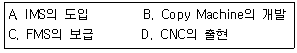
- D→B→A→C
- D→B→C→A
- B→D→C→A
- B→D→A→C
(정답률: 57%)
51. 3차원 뷰잉(viwin) 기법 중 아이소메트릭 투영(isometric projection)에 해당하는 투영 기법은?
- 경사 투영
- 원근 투영
- 직교 투영
- 캐비넷 투영
(정답률: 50%)
52. 폐곡선과 내부 영역사이에 사이드 스텝(side step) 및 다운 스텝(down step)을 주어 영역을 반복하여 가공하는 방법은?
- 윤곽가공
- 포켓가공
- 면삭가공
- 펜슬가공
(정답률: 69%)
53. 3차원 솔리드 모델링을 구성하는 요소 중에서 프리미티브(primitive)라고 볼 수 없는 것은?
- cone
- box
- sphere
- point
(정답률: 66%)
54. 모델링과 연관된 용어에 관한 설명 중 잘못된 것은?
- 스위핑(Sweeping):하나의 2차원 단면형상을 입력하고 이를 안내곡선을 따라 이동시켜 입체를 생성
- 스키닝(Skinning):여러 개의 단면형상을 입력하고 이를 덮어 싸는 입체를 생성
- 리프팅(Lifting):주어진 물체의 특정면의 전부 또는 일부를 원하는 방향으로 움직여서 물체가 그 방향으로 늘어난 효과를 갖도록 하는 것
- 블렌딩(Blending):주어진 형상을 국부적으로 변화시키는 방법으로 접하는 곡면을 예리한 모서리로 처리 하는 방법
(정답률: 69%)
55. CAD 프로그램에서 자유곡선을 표현할 때 주로 많이 사용하는 방정식의 형태는?
- 양함수식(explicit equation)
- 음함수식(implicit equation)
- 하이브리드식(hybris equation)
- 매개변수식(parametric equation)
(정답률: 73%)
56. DNC(Direct Numerical Control) 운전 시 사용되는 통신케이블(RS232C) 25핀 중에서 수신을 나타내는 핀 번호는?
- 3
- 5
- 6
- 7
(정답률: 41%)
57. 다음 용어에 대한 설명 중 틀린 것은?
- CNC:컴퓨터를 이용한 수치제어
- DNC:분배 수치제어
- AGV:무인 운반차(반송차)
- CIM:컴퓨터를 이용한 공정계획
(정답률: 55%)
58. 지름이 20mm인 볼엔드밀로 평면을 가공할 때 경로 간격이 12mm인 경우 커습(cusp)의 높이는?
- 1.8mm
- 2.0mm
- 2.2mm
- 2.4mm
(정답률: 52%)
59. 서피스 모델링에서 곡면을 절단하였을 때 나타나는 요소는?
- 곡면(surface)
- 점(point)
- 곡선(curve)
- 편면(plane)
(정답률: 70%)
60. CPU(중앙처리장치)를 2개 부분으로 나누면 어떻게 구성되는가?
- 연산장치와 제어장치
- 연산장치와 산술장치
- 주기억장치와 제어장치
- 주변장치와 제어장치
(정답률: 64%)
4과목: 기계제도 및 CNC공작법
61. 헐거운 끼워맞춤에 해당하는 것은?
- H7/k6
- H7/m6
- H7/n6
- H7/g6
(정답률: 78%)
62. 그림과 같은 부품의 중량은 약 몇 g인가? (단, 부품 재질의 단위 체적당 중량은 7.21g/cm3이다.)
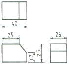
- 137.16g
- 158.82g
- 169.43g
- 180.47g
(정답률: 32%)
63. 기하 공차 기호 중 데이텀을 적용해야 되는 것은?
- ○
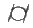
- ∠
- ▱
(정답률: 61%)
64. 물체의 한쪽 면이 경사되어 평면도나 측면도로는 물체의 형상을 나타내기 어려울 경우 가장 적합한 투상법은?
- 요점투상법
- 국부투상법
- 부분투상법
- 보조투상법
(정답률: 54%)
65. 나사 표시 "M15×1.5-6H/6g“에서 6H/6g는 무엇을 나타내는가?
- 나사의 호칭치수
- 나사부의 길이
- 나사의 등급
- 나사의 피치
(정답률: 76%)
66. 도면 부품란의 재료기호에 기입된 "SPS 6"는 어떤 재료를 의미하는가?
- 스프링 강재
- 스테인리스 압연강재
- 냉간압연 강판
- 기계구조용 탄소강
(정답률: 81%)
67. 가상선의 용도에 해당되지 않는 것은?
- 가공 전 또는 가공 후의 모양을 표시하는 데 사용
- 인접부분을 참고로 표시하는데 사용
- 되풀이 되는 것을 나타내는데 사용
- 대상의 일부를 생략하고 그 경계를 나타내는데 사용
(정답률: 50%)
68. 도면에 마련할 양식 중 반드시 설정하지 않아도 되는 양식의 명칭은?
- 표제란
- 부품란
- 중심마크
- 윤곽(테투리)
(정답률: 69%)
69. 제3각법으로 투상한 정면도와 평면도를 나타낸 것이다. 해당 형상에 적합한 우측면도는?
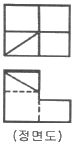
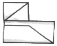
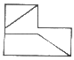
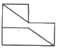
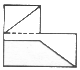
(정답률: 38%)
70. 도면에 표면거칠기 표시가 다음과 같이 표시되었을 때 L=8이 의미하는 것은?
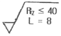
- 기준길이
- 상한치
- 가공형태
- 하한치
(정답률: 78%)
71. CNC선반으로 가공할 때 G96 S157 M03:으로 지령되었다면 주축 회전수는 몇 rpm인가? (단, 공작물의 지름은 ø40mm이고, π는 3.14로 한다.)
- 1000
- 1250
- 1500
- 1750
(정답률: 76%)
72. CNC와이어 컷 방전가공에서 가공액의 역할이 아닌 것은?
- 방전 폭발 압력의 발생
- 극간의 절연 회복
- 비 저항치의 제어
- 방전 가공부분의 냉각
(정답률: 41%)
73. 커플링으로 연결된 CNC공작기계의 볼 스크루 피치가 12mm이고, 서보모터의 회전각도가 240°일 때 테이블의 이동량은 얼마인가?
- 2mm
- 4mm
- 8mm
- 12mm
(정답률: 53%)
74. CNC선반에서 2.5초 동안 프로그램의 진행을 정지시키는 방법으로 맞는 것은?
- G04 X2.5 ;
- G04 P0.0.25 ;
- G04 P2.5 ;
- G04 P0.2.5 ;
(정답률: 79%)
75. 서보기구에서 위치의 검출을 서보모터 축이나 볼 나사의 회전 각도로 검출하는 방식으로 일반 CNC공작기계에서 가장 많이 사용되는 것은?
- 반개방회로 방식
- 개방회로 방식
- 패쇄회로 방식
- 반폐쇄회로 방식
(정답률: 74%)
76. 다음 머시닝센터 프로그램에서 Q_는 무엇을 의미하는가?
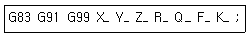
- 반복 회수
- 복귀점의 위치
- 이송 속도
- 매회 절입량
(정답률: 72%)
77. 수치제어 자동화 시스템의 발달 과정을 4단계로 분류할 때 올바른 것은?
- NC→CNC→DNC→FMS
- DMC→NC→CNC→FMS
- FMS→NC→CNC→DNC
- NC→DNC→CNC→FMS
(정답률: 71%)
78. CNC 공작기계에서 기계의 움직임을 전기적 신호로 표시하는 피드백 장치는?
- 리졸버
- 엔코더
- 타코 제네레이터
- 서보 모터
(정답률: 78%)
79. 머시닝센터 작업 시 주의사항이 아닌 것은?
- 공작물 고정시 손을 조심해야 한다.
- 작업 중에 작업상태를 확인하기 위해 칩을 제거한다.
- 작업시 불편하여도 문을 닫고 작업한다.
- ATC를 작동시켜 공구 교환을 점검한다.
(정답률: 84%)
80. CNC선반에서 G92로 나사를 가공하여 할 때 나사의 리드(lead)를 나타내는 데 필요한 것은?
- M
- C
- P
- F
(정답률: 74%)
바깥지름 = (모듈 × 잇수 + 2) × cos(비틀림각)
여기에 주어진 값들을 대입하면,
바깥지름 = (2 × 27 + 2) × cos(15°) ≈ 60.02
따라서, 바깥지름은 약 60mm로 가공해야 한다.